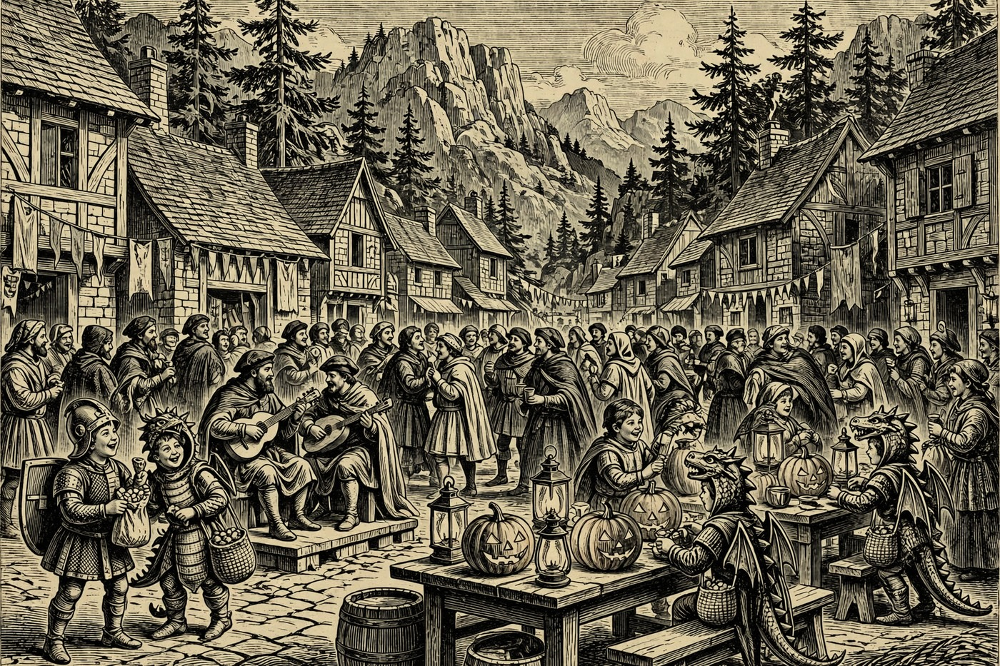
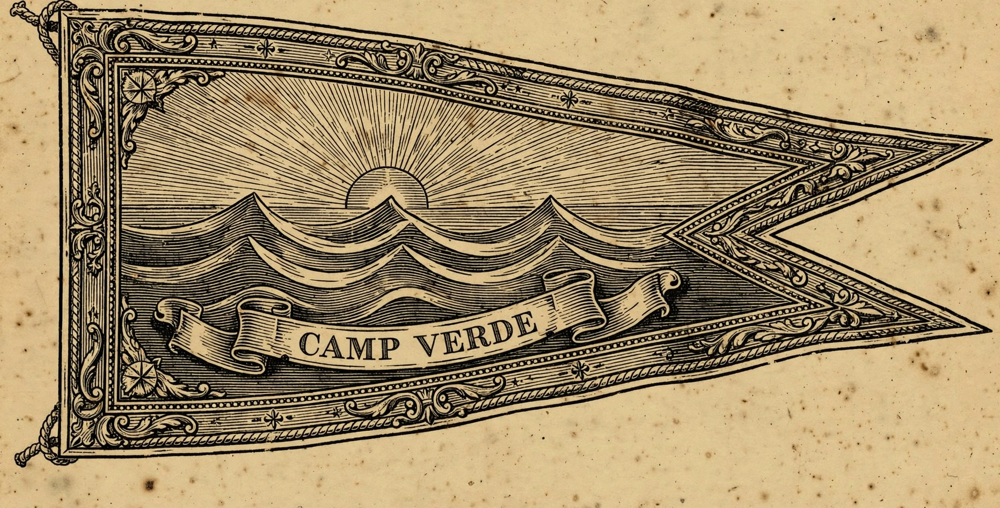

Hail, guest of the Hearth, and good Middas morning to you — the clouds hang low and kind over the pines, the air sits mild at 69 degrees, and Mogollon’s Hearth sends warm greetings under a grey Rim Country sky. PAYSON — It is a quiet day here in the Payson Hold itself, and a merry one abroad: a concert in Sedona tonight, baking and open-mic music in Prescott, and adoptable dogs introduced live from Camp Verde. Then Halloween takes the week by both hands — a remembrance mural and a farmers market on Thursday, a brand-new gravel bike race rolling into Prescott on Friday, and trunk-or-treats from Camp Verde to Show Low on Saturday. One sad note, told plainly: Sedona’s Día de los Muertos celebration on Sunday, Nov. 1 is canceled, by the Nine — the venue’s own page says so — though its Marigold Mural Project still opens Thursday as planned.
Happening in the Holds Today
 Payson— Bible Study at Juanita’s — this morning at 9, at 139 Hash Knife Drive in Payson. A small, weekly, come-as-you-are study group, warm and unhurried — a quiet, friendly local morning rather than a big event. Guests who like to start a grey day in good company will feel right at home. No fuss, no fanfare — just neighbors, coffee weather, and an open door.
Payson— Bible Study at Juanita’s — this morning at 9, at 139 Hash Knife Drive in Payson. A small, weekly, come-as-you-are study group, warm and unhurried — a quiet, friendly local morning rather than a big event. Guests who like to start a grey day in good company will feel right at home. No fuss, no fanfare — just neighbors, coffee weather, and an open door.
Camp Verde— “We Are Live!” — Hillside Canine adoptable dogs, live online — tonight at 6, on Hillside Canine’s Facebook page (the kennel stands at 874 North Industrial Drive in Camp Verde). The handlers introduce their adoptable dogs live — meet each dog, hear its story and its quirks, and ask questions as you watch. It is a fine fireside doing for dog lovers, and for any traveler quietly thinking a dog might join the household. No road trip needed — the pack comes to you. Sedona— Sirsy Concert — tonight from 7 to 8:30 at the Mary D. Fisher Theatre, 2030 West State Route 89A in Sedona, presented by the Sedona International Film Festival. Sirsy is an award-winning duo from upstate New York — just two musicians making a sound the Boston Globe called a “little band with the big sound.” Expect catchy, soulful songs, stories, and jokes between the tunes in an intimate theatre. A splendid evening road-trip for music lovers under the red rocks.
Sedona— Sirsy Concert — tonight from 7 to 8:30 at the Mary D. Fisher Theatre, 2030 West State Route 89A in Sedona, presented by the Sedona International Film Festival. Sirsy is an award-winning duo from upstate New York — just two musicians making a sound the Boston Globe called a “little band with the big sound.” Expect catchy, soulful songs, stories, and jokes between the tunes in an intimate theatre. A splendid evening road-trip for music lovers under the red rocks. Prescott— High Altitude Baking Workshop — tonight from 5 to 7 at 840 Rodeo Drive, Building C, in Prescott. Why do cakes fall flat above 3,000 feet, and how do you fix them? This hands-on class covers the fixes — time, temperature, and ingredient changes that make high-country baking behave. It costs $5 to cover materials, seats are limited to 30, and registration is required. Home bakers, this one was made for you.— Musicians with Heart Open Mic — tonight from 7 to 10 at the Jersey Lilly Saloon in Prescott. Local singers and pickers take their turns in a Whiskey Row saloon while the crowd settles in — and every donation goes to local charity. Part concert, part town gathering with better tunes. Drop in for one song or stay for the whole merry evening.— Beginning Line Dance with Beth Raber — tonight at 6 at The Center on Rosser, 1280 East Rosser Street, Suite B, in Prescott. A beginner-friendly line-dance session — easy steps, good music, and a social floor where first-timers are the honored guests. A joyful way to shake off a grey day and earn your supper. Wear shoes you can slide in, and bring your best two left feet.
Prescott— High Altitude Baking Workshop — tonight from 5 to 7 at 840 Rodeo Drive, Building C, in Prescott. Why do cakes fall flat above 3,000 feet, and how do you fix them? This hands-on class covers the fixes — time, temperature, and ingredient changes that make high-country baking behave. It costs $5 to cover materials, seats are limited to 30, and registration is required. Home bakers, this one was made for you.— Musicians with Heart Open Mic — tonight from 7 to 10 at the Jersey Lilly Saloon in Prescott. Local singers and pickers take their turns in a Whiskey Row saloon while the crowd settles in — and every donation goes to local charity. Part concert, part town gathering with better tunes. Drop in for one song or stay for the whole merry evening.— Beginning Line Dance with Beth Raber — tonight at 6 at The Center on Rosser, 1280 East Rosser Street, Suite B, in Prescott. A beginner-friendly line-dance session — easy steps, good music, and a social floor where first-timers are the honored guests. A joyful way to shake off a grey day and earn your supper. Wear shoes you can slide in, and bring your best two left feet.
The Days Ahead
- Thu, Oct. 29— Marigold Mural Project begins at Tlaquepaque in Sedona, 336 State Route 179, running 11 to 5 each day through the weekend. Visitors paint a tribute to a loved one on a 26-foot community remembrance wall, guided by the artist Lovejoy, with brushes and paints supplied and earlier years’ murals standing nearby for heart. You need only bring a name and a memory. One note, told plainly: the venue’s Día de los Muertos celebration on Sunday is canceled — the mural project itself still opens Thursday as planned.— Windmill Park Farmers Market in Cornville, just outside Camp Verde, from 2 to 6 in the afternoon at 9950 East Cornville Road. A small-town creekside market, rain or shine — fresh produce, sourdough and baked goods, farm eggs, local honey, goat-milk soaps, jams, pickles, and handmade crafts from local makers. A fine guest outing for anyone who shops with their stomach. Come hungry and bring a bag with room to spare.— Show Low Public Library Halloween Carnival — at 3 in the afternoon at the library, 181 North 9th Street in Show Low, with a costume contest at 4. Games, activities, prizes, and treats for everyone — a family Halloween stop run by the city library itself. One honest note: the city’s own post mixes its weekday words, so a quick call to the library before you set out is a wise traveler’s move. Costumes are very much welcome.
- Fri, Oct. 30— Prescott — The Rough Rider opens at Courthouse Square in Prescott, a brand-new three-day gravel bike race running Friday, Oct. 30 through Sunday, Nov. 1. Riders take on three stages of high-desert roads based in historic downtown — Stage 1 starts Friday at 9 in the morning at Camp Wood, and the weekend stages finish right on North Cortez Street. Spectators get the best of it: fast starts, dusty finishes, and a square full of food and cheer. Come wave the riders home like bards greeting heroes.
- Sat, Oct. 31— Camp Verde Trunk or Treat takes over Main Street in Camp Verde from 5 to 7 in the evening. Businesses, groups, and neighbors line the street with decorated cars and booths, handing out candy to crowds the town counts in the thousands. There are haunted houses, games, music, and a Haunted Jail for the brave, plus a decorating contest. Costumes are the order of the night — bring a bag with room to spare.— Uptown Trick or Treat in Sedona, 5 to 8 in the evening along Uptown’s main street on State Route 89A. Shops stay open late handing out candy as costumed families wander door to door under the red rocks. Look for the “Thriller” flash-mob dance at Sinagua Plaza and the Fire Department’s Haunted Ambulance nearby. It is Sedona’s biggest Halloween gathering — joyful, glowing, and full of tiny dragons and knights.— Show Low Main Street Trunk or Treat — from 3 to 8 in the evening at Hatch Toyota, 1051 North Auto Mall Parkway in Show Low. Trunk-or-treating, music, food, a haunted house, and a Kids Zone, with a trunk-decorating contest offering cash prizes. Presented by Show Low Main Street, it is the town’s main Halloween gathering. Families from across the White Mountains make the trip for this one.
- Tue, Nov. 3— Trail Day Volunteer Build in Pine — from 7 in the morning to noon, off Highway 87 just before Pine. Pine Strawberry Fuel Reduction calls hikers, bikers, runners, and neighbors to help clear brush, move rocks, and shape a trail the whole community will use for years. The work also opens better access for fire crews, so every hour given does double duty. Tools are provided and no experience is needed — bring water, gloves if you have them, and sturdy shoes, and sign up at trails@psfuelreduction.org.